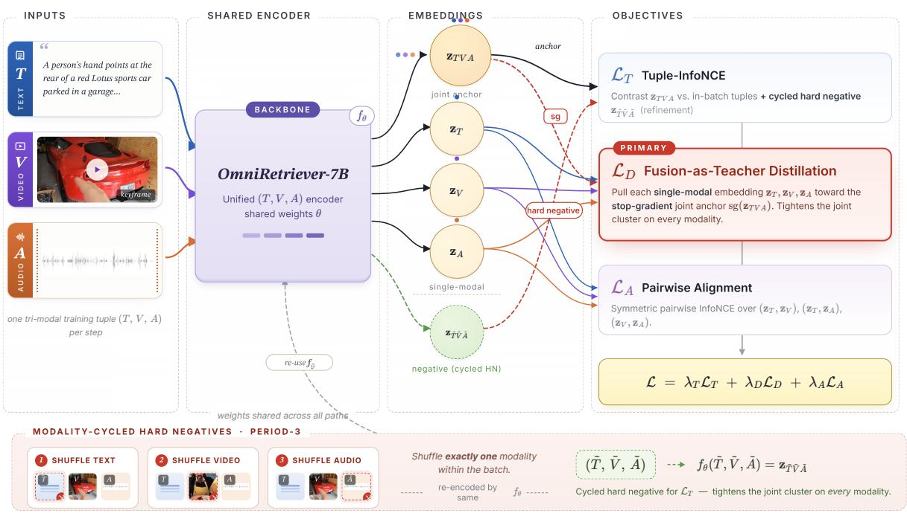

Figureure 1 · : Method overviewFigure 1: Method overview. OmniRetriever uses the joint embedding $\mathbf { z } _ { T V A } ,$ which is unused by pairwise training (a), as a supervision target (b) via fusion-as-teacher distillation $\mathcal { L } _ { D }$ and a Tuple-InfoNCE term $\mathcal { L } _ { T }$ . This yields a new open result on 12-direction AVT retrieval (c) and a 13.3 to 18.0 R@1 gain over Gemini Embedding 2 on external audio–text benchmarks (d).这张图概括 OmniRetriever 的整体方法流程。阅读时先看模块之间传递的训练信号，再看作者如何把目标拆成可优化的子问题。

Figureure 2 · : OmniRetriever training overviewFigure 2: OmniRetriever training overview. A shared encoder $f _ { \theta }$ consumes the three modalities jointly, producing the full-modal anchor $\mathbf { z } _ { T V A }$ , or individually, producing ${ \bf z } _ { T } , { \bf z } _ { V } , { \bf z } _ { A } . \mathrm { ~ } \mathcal { L } _ { D }$ (fusion-as-teacher distillation, primary; Section 3.2) pulls each single-modality embedding toward a stop-gradient copy of $\mathbf { z } _ { T V A } . \mathcal { L } _ { T }$ (Tuple-InfoNCE refinement; Section 3.3) supervises $\mathbf { z } _ { T V A }$ against the in-batch tuple grid plus a modality-cycled hard negative $\mathbf { z } _ { \tilde { T } \tilde { V } \tilde { A } }$ (Equation (4)). $\mathcal { L } _ { A }$ (pairwise alignment; Section 3.1) ties pairs of single-modality embeddings via symmetric InfoNCE. At each step the hard negative perturbs one of $T , V , A$ on a period-3 schedule.这张图概括 OmniRetriever 的整体方法流程。阅读时先看模块之间传递的训练信号，再看作者如何把目标拆成可优化的子问题。